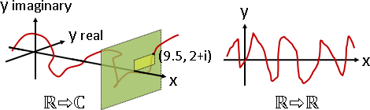
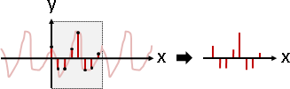
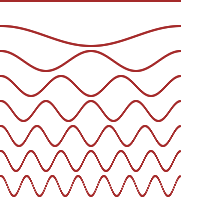
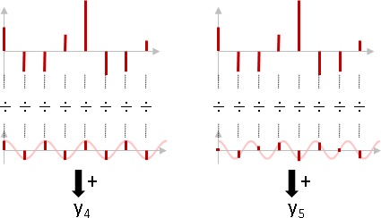
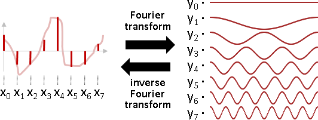
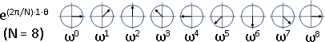
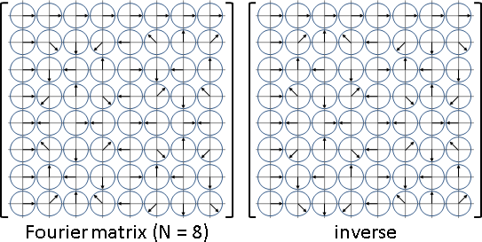
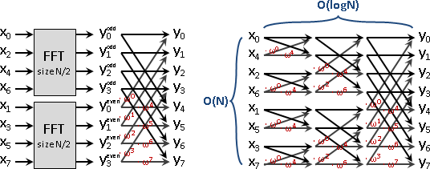
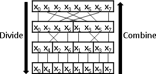
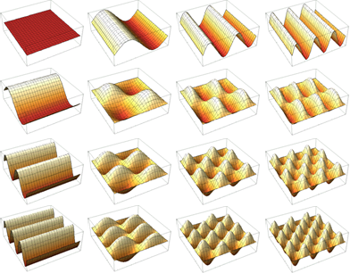

Fourier Transform輸入輸出
傅立葉轉換是一對一函數，輸入輸出都是一串複數，可以是連續函數或者離散數列，各有對應名稱。混淆視聽罷了。
輸入 輸出 名稱
連續 連續 Fourier Transform
連續 離散 Fourier Series
離散 連續 Discrete-time Fourier Transform
離散 離散 Discrete Fourier Transform
連續到連續的傅立葉轉換，輸入和輸出都是一個ℝ ⇨ ℂ函數。（ℝ ⇨ ℂ函數很難畫，故圖例為實數函數。）

離散到離散的傅立葉轉換，輸入和輸出都是一串複數數列。離散版本是連續版本的特例：輸入輸出是週期函數、等距取樣。（複數數列很難畫，故圖例為實數數列。）

電腦做運算，數值皆離散。本篇只介紹離散版本。
Fourier Transform物理意義
N個複數波，頻率是0倍到N-1倍，分別是ei⋅(2π/N)⋅0⋅θ、ei⋅(2π/N)⋅1⋅θ、……、ei⋅(2π/N)⋅(N-1)⋅θ。寫成代數是ei⋅(2π/N)⋅n⋅θ。（複數波很難畫，故圖例為實數波。）

輸入數列與一個波，N個對應位置點對點相除、再求總和，得到一個輸出數值。可以簡單想做：輸入數列除以波，求比例。
（學過線性代數的讀者，也可以想做點積、投影。）
輸入數列，分別除以N個波，得到N個輸出數值，形成輸出數列。這就是傅立葉轉換。

正向傅立葉轉換，是把一個複雜的波，拆解成N個平穩的波，頻率是0倍到N-1倍，強度與相位是N個輸出數值的強度與相位。
逆向傅立葉轉換，是把N個平穩的波，頻率是0倍到N-1倍，分別乘上強度、加上相位，再疊加成一個複雜的波。

Fourier Transform數學公式
傅立葉轉換
N-1
y[n] = ∑ { x[k] ÷ ei⋅(2π/N)⋅n⋅k } ÷ sqrt(N)
k=0
N-1
= ∑ { x[k] ⋅ e-i⋅(2π/N)⋅n⋅k } ÷ sqrt(N)
k=0
傅立葉轉換的反函數，稱作逆向傅立葉轉換
N-1
x[n] = ∑ { y[k] ⋅ ei⋅(2π/N)⋅n⋅k } ÷ sqrt(N)
k=0
為了加快計算速度，正向傅立葉轉換經常改成不除以sqrt(N)，逆向傅立葉轉換經常改成多除以sqrt(N)。
N-1
y[n] = ∑ { x[k] ÷ ei⋅(2π/N)⋅n⋅k }
k=0
N-1
x[n] = ∑ { y[k] ⋅ ei⋅(2π/N)⋅n⋅k } ÷ N
k=0
傅立葉轉換是線性變換，其矩陣恰是正規正交矩陣。
ω = ei⋅2π/N
[y0 ] [ ω-0⋅0 ω-0⋅1 ω-0⋅2 .. ω-0⋅(N-1) ] [x0 ]
[y1 ] [ ω-1⋅0 ω-1⋅1 ω-1⋅2 .. ω-1⋅(N-1) ] [x1 ]
[y2 ] = [ ω-2⋅0 ω-2⋅1 ω-2⋅2 .. ω-2⋅(N-1) ] [x2 ]
[: ] [ : : : : ] [: ]
[yN-1] [ ω-(N-1)⋅0 ω-(N-1)⋅1 ω-(N-1)⋅2 .. ω-(N-1)⋅(N-1) ] [xN-1]
[x0 ] [ ω0⋅0 ω0⋅1 ω0⋅2 .. ω0⋅(N-1) ] [y0 ]
[x1 ] 1 [ ω1⋅0 ω1⋅1 ω1⋅2 .. ω1⋅(N-1) ] [y1 ]
[x2 ] = --- [ ω2⋅0 ω2⋅1 ω2⋅2 .. ω2⋅(N-1) ] [y2 ]
[: ] N [ : : : : ] [: ]
[xN-1] [ ω(N-1)⋅0 ω(N-1)⋅1 ω(N-1)⋅2 .. ω(N-1)⋅(N-1) ] [yN-1]
複數波，變成離散數列，可以畫成這樣子：

傅立葉轉換的矩陣，可以畫成這樣子：

演算法（公式解）
依照公式實作，時間複雜度是O(N^2)。
演算法（Cooley-Tukey Algorithm）
時間複雜度優於O(N^2)的傅立葉轉換演算法，老人家就直接稱作「快速傅立葉轉換Fast Fourier Transform, FFT」。
這裡介紹最經典的快速傅立葉轉換。公式的偶數項與奇數項分開整理，採用Dynamic Programming，時間複雜度是O(NlogN)。由於必須剛好對半分，所以N必須剛好是2的次方。當N不是2的次方，可在輸入數列末端補零，理由容後介紹。
逆向快速傅立葉轉換的計算原理也是一樣的，此處省略。
【所有文獻皆歸類為Divide and Conquer，不太準確。】
FFT
(x0 x1 x2 x3 x4 x5 x6 x7) ----> (y0 y1 y2 y3 y4 y5 y6 y7)
N = 8, ω = e-i⋅2π/N 注意到ω放入了負號，讓下面的數學式子比較簡潔
y0 = x0ω0 + x1ω0 + x2ω0 + x3ω0 + x4ω0 + x5ω0 + x6ω0 + x7ω0
= (x0ω0 + x2ω0 + x4ω0 + x6ω0) + (x1ω0 + x3ω0 + x5ω0 + x7ω0)
= (x0ω0 + x2ω0 + x4ω0 + x6ω0) + ω0 ⋅ (x1ω0 + x3ω0 + x5ω0 + x7ω0)
= (x0 x2 x4 x6)轉換結果第0項 + ω0 ⋅ (x1 x3 x5 x7)轉換結果第0項
= y偶0 + ω0 ⋅ y奇0
y1 = x0ω0 + x1ω1 + x2ω2 + x3ω3 + x4ω4 + x5ω5 + x6ω6 + x7ω7
= (x0ω0 + x2ω2 + x4ω4 + x6ω6) + (x1ω1 + x3ω3 + x5ω5 + x7ω7)
= (x0ω0 + x2ω2 + x4ω4 + x6ω6) + ω1 ⋅ (x1ω0 + x3ω2 + x5ω4 + x7ω6)
= (x0υ0 + x2υ1 + x4υ2 + x6υ3) + ω1 ⋅ (x1υ0 + x3υ1 + x5υ2 + x7υ3)
= (x0 x2 x4 x6)轉換結果第1項 + ω1 ⋅ (x1 x3 x5 x7)轉換結果第2項
= y偶1 + ω1 ⋅ y奇1
y2 = x0ω0 + x1ω2 + x2ω4 + x3ω6 + x4ω8 + x5ω10 + x6ω12 + x7ω14
= (x0ω0 + x2ω4 + x4ω8 + x6ω12) + (x1ω2 + x3ω6 + x5ω10 + x7ω14)
= (x0ω0 + x2ω4 + x4ω8 + x6ω12) + ω2 ⋅ (x1ω0 + x3ω4 + x5ω8 + x7ω12)
= (x0υ0 + x2υ2 + x4υ4 + x6υ6 ) + ω2 ⋅ (x1υ0 + x3υ2 + x5υ4 + x7υ6 )
= (x0 x2 x4 x6)轉換結果第2項 + ω2 ⋅ (x1 x3 x5 x7)轉換結果第2項
= y偶2 + ω2 ⋅ y奇2
y3 = x0ω0 + x1ω3 + x2ω6 + x3ω9 + x4ω12 + x5ω15 + x6ω18 + x7ω21
= (x0ω0 + x2ω6 + x4ω12 + x6ω18) + (x1ω3 + x3ω9 + x5ω15 + x7ω21)
= (x0ω0 + x2ω6 + x4ω12 + x6ω18) + ω3 ⋅ (x1ω0 + x3ω6 + x5ω12 + x7ω18)
= (x0υ0 + x2υ3 + x4υ6 + x6υ9 ) + ω3 ⋅ (x1υ0 + x3υ3 + x5υ6 + x7υ9 )
= (x0 x2 x4 x6)轉換結果第3項 + ω3 ⋅ (x1 x3 x5 x7)轉換結果第3項
= y偶3 + ω3 ⋅ y奇3
注意到 ω8 = 1
y4 = x0ω0 + x1ω4 + x2ω8 + x3ω12 + x4ω16 + x5ω20 + x6ω24 + x7ω28
= (x0ω0 + x2ω8 + x4ω16 + x6ω24) + (x1ω4 + x3ω12 + x5ω20 + x7ω28)
= (x0ω0 + x2ω8 + x4ω16 + x6ω24) + ω4 ⋅ (x1ω0 + x3ω8 + x5ω16 + x7ω24)
= (x0ω0 + x2ω0 + x4ω0 + x6ω0 ) + ω4 ⋅ (x1ω0 + x3ω0 + x5ω0 + x7ω0 )
= (x0 x2 x4 x6)轉換結果第0項 + ω4 ⋅ (x1 x3 x5 x7)轉換結果第0項
= y偶0 + ω4 ⋅ y奇0
注意到 ω8 = 1
y5 = x0ω0 + x1ω5 + x2ω10 + x3ω15 + x4ω20 + x5ω20 + x6ω25 + x7ω30
= (x0ω0 + x2ω10 + x4ω20 + x6ω30) + (x1ω5 + x3ω10 + x5ω25 + x7ω30)
= (x0ω0 + x2ω10 + x4ω20 + x6ω30) + ω5 ⋅ (x1ω0 + x3ω10 + x5ω20 + x7ω30)
= (x0ω0 + x2ω2 + x4ω4 + x6ω6 ) + ω5 ⋅ (x1ω0 + x3ω4 + x5ω6 + x7ω8 )
= (x0υ0 + x2υ1 + x4υ2 + x6υ3 ) + ω5 ⋅ (x1υ0 + x3υ2 + x5υ3 + x7υ4 )
= (x0 x2 x4 x6)轉換結果第1項 + ω5 ⋅ (x1 x3 x5 x7)轉換結果第1項
= y偶1 + ω5 ⋅ y奇1
y6與y7當做作業，請讀者自己推導吧！
y0 = y偶0 + y奇0 ⋅ ω0
y1 = y偶1 + y奇1 ⋅ ω1
y2 = y偶2 + y奇2 ⋅ ω2
y3 = y偶3 + y奇3 ⋅ ω3
y4 = y偶0 + y奇0 ⋅ ω4
y5 = y偶1 + y奇1 ⋅ ω5
y6 = y偶2 + y奇2 ⋅ ω6
y7 = y偶3 + y奇3 ⋅ ω7

觀察DP的遞推過程，偶數項與奇數項分開處理之後，索引值不是連續的，不好取值。預先重新排列陣列元素，符合遞推過程，就可以減少cache miss，還可以重複使用記憶體、節省空間。
如何重新排列呢？有趣的是，索引值的二進位表示法，高低位數顛倒之後，恰是正確結果！
重新排列的時間複雜度為O(NlogN)。似乎可以加速為O(N)。

2D Fourier Transform
傅立葉轉換可以推廣到高維度。
離散版本的二維傅立葉轉換，輸入輸出都是一個N×N複數方陣。輸入方陣，分別除以N×N種二維複數波，得到N×N個輸出數值，形成輸出方陣。（由於二維複數波很難畫，以下改畫二維實數波。）

依照公式實作，時間複雜度為O(N^4)。快速的演算法，是每一橫條各自傅立葉轉換，然後每一直條各自傅立葉轉換，時間複雜度為O(NNlogN + NNlogN) = O(NNlogN)。
Hartley Transform
哈特利轉換是一對一函數，輸入和輸出都是一串實數。
哈特利轉換與傅立葉轉換如出一轍，只少了虛數i而已。
傅立葉轉換：
2πnk 2πnk -i2πnk/N
cos ———— - i ⋅ sin ———— = e
N N
哈特利轉換：
2πnk 2πnk 2πnk
cos ———— + sin ———— = cas ————
N N N
另一個哈特利轉換，比較沒人用：
2πnk 2πnk
cos ———— - sin ————
N N
傅立葉轉換：
N-1
y[n] = ∑ { x[k] ÷ ei⋅(2π/N)⋅n⋅k } ÷ sqrt(N)
k=0
哈特利轉換：
N-1
y[n] = ∑ { x[k] ⋅ cas((2π/N)⋅n⋅k) } ÷ sqrt(N)
k=0
哈特利轉換的輸出，可以調整成傅立葉轉換的輸出，O(N)：
http://mathworld.wolfram.com/HartleyTransform.html
實數運算比複數運算還要簡單，所以哈特利轉換比傅立葉轉換還要快速。聲音處理、影像處理時，訊號都是實數、甚至是整數，剛好也符合哈特利轉換的輸入格式。因此一般都是套用哈特利轉換進行計算，再把結果調整成傅立葉轉換。
由於哈特利轉換與傅立葉轉換的公式幾乎相同，所以兩者的演算法也是一一對應。這裡介紹的也是運用Divide and Conquer的方法。不一樣的是奇數項的處理方式，提出常數的步驟變複雜了。
N-1
∑ { x[k] ⋅ cas((2π/N)⋅n⋅k) }
k=1,3,5,...
N/2-1
= ∑ { x[2k+1] ⋅ cas((2π/N)⋅n⋅(2k+1)) }
k=0,1,2,...
N/2-1
= ∑ { x[2k+1] ⋅ ( cas((2π/N)⋅n⋅2k) ⋅ cos((2π/N)⋅n⋅1)
k=0,1,2,... + cas(-(2π/N)⋅n⋅2k) ⋅ sin((2π/N)⋅n⋅1) ) }
N/2-1
= ∑ { x[2k+1] ⋅ ( cas((2π/(N/2))⋅n⋅k) ⋅ cos((2π/N)⋅n⋅1)
k=0,1,2,... + cas(-(2π/(N/2))⋅n⋅k) ⋅ sin((2π/N)⋅n⋅1) ) }
N/2-1
= ∑ { x[2k+1] ⋅ cas( (2π/(N/2))⋅n⋅k) } ⋅ cos((2π/N)⋅n⋅1)
k=0,1,2,...
N/2-1
+ ∑ { x[2k+1] ⋅ cas(-(2π/(N/2))⋅n⋅k) } ⋅ sin((2π/N)⋅n⋅1)
k=0,1,2,...
= y奇[n] ⋅ cos((2π/N)⋅n⋅1) + y奇[-n] ⋅ sin((2π/N)⋅n⋅1)
θ = 2π / N
y0 = y偶0 + y奇0 * cos0θ + y奇0 ⋅ sin0θ
y1 = y偶1 + y奇1 * cos1θ + y奇3 ⋅ sin1θ
y2 = y偶2 + y奇2 * cos2θ + y奇2 ⋅ sin2θ
y3 = y偶3 + y奇3 * cos3θ + y奇1 ⋅ sin3θ
y4 = y偶0 + y奇0 * cos4θ + y奇0 ⋅ sin4θ
y5 = y偶1 + y奇1 * cos5θ + y奇3 ⋅ sin5θ
y6 = y偶2 + y奇2 * cos6θ + y奇2 ⋅ sin6θ
y7 = y偶3 + y奇3 * cos7θ + y奇1 ⋅ sin7θ
下面是據我所知效率最好的實作程式碼：
http://home.iae.nl/users/mhx/fft.c
http://reocities.com/ResearchTriangle/8869/fft_summary.html